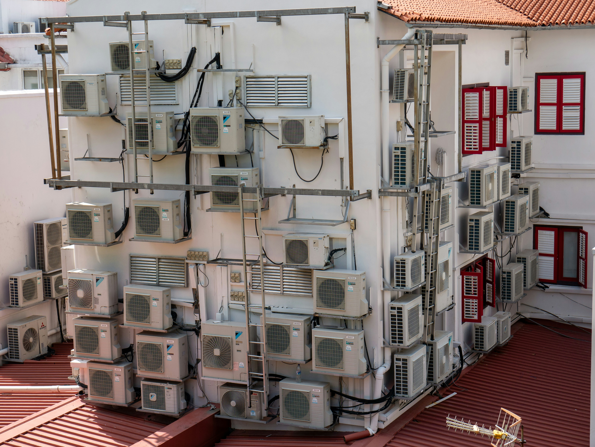
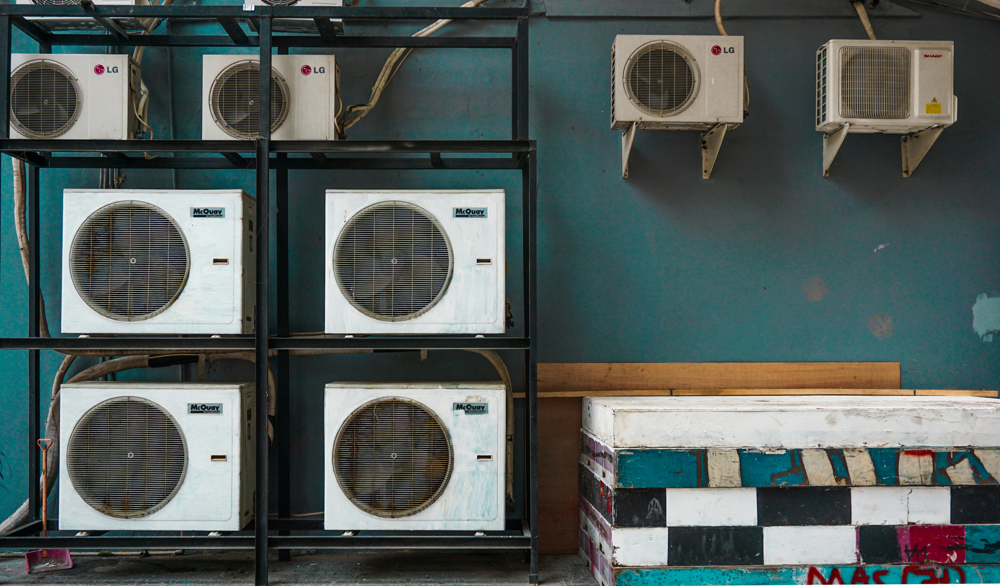
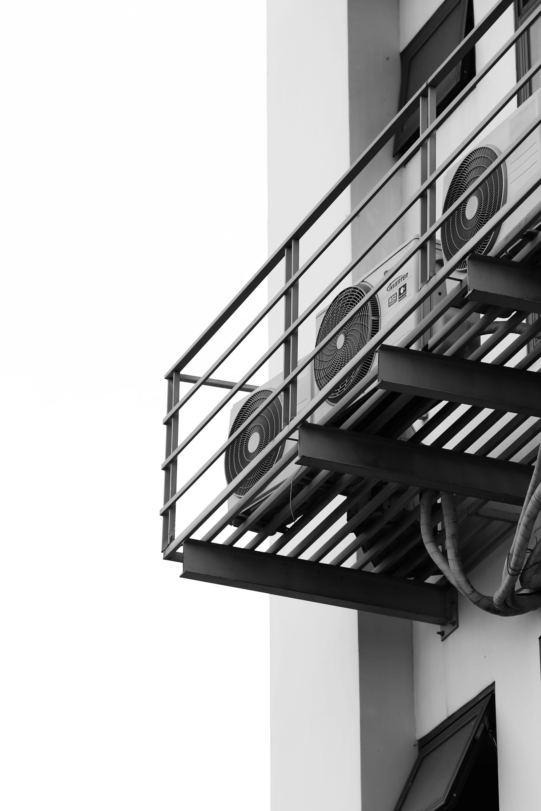

Rezolvă problemele cu apa care curge, picura sau nu se drenează corect
Înțelege cauzele și soluțiile pentru problemele cu apa
Apa care curge din aerul condiționat este o problemă comună care poate avea mai multe cauze:
Aerul condiționat funcționează prin eliminarea umidității din aer:
Când acest proces este întrerupt, apa poate curge în locuri nepotrivite.
Pași pentru identificarea cauzei problemei
Inspectează conducta de drenaj pentru blocaje sau rupturi.
Asigură-te că unitatea este nivelată corect pentru drenaj optim.
Filtrele murdare pot cauza probleme cu evaporatorul.
Rezolvări practice pentru fiecare tip de problemă
Folosește o sârmă flexibilă sau un aspirator pentru a elimina blocajele.
Asigură-te că unitatea este ușor înclinată spre drenaj (2-3 grade).
Spală filtrele cu apă caldă și săpun, apoi lasă-le să se usuce.
Asigură-te că tava nu este fisurată și este poziționată corect.
Gheața pe evaporator necesită verificarea freonului și a sistemului.
Conductele încorporate necesită echipament special pentru curățare.
Funcționarea incorectă poate cauza probleme cu evaporatorul.
Fisuri sau daune la unitate necesită înlocuirea pieselor.
Urmărește acești pași pentru a rezolva problema cu apa
Deconectează aerul condiționat de la rețea.
Spală filtrele cu apă caldă și săpun.
Inspectează conducta de drenaj pentru blocaje.
Elimină murdăria și verifică fisurile.
Asigură-te că unitatea este nivelată corect.
Pornește și verifică dacă problema persistă.
Măsuri preventive pentru a evita problemele viitoare
Curăță filtrele la fiecare 2-4 săptămâni în sezonul cald.
Verifică periodic drenajul și tava pentru probleme.
Nu seta temperatura prea joasă pentru a evita ghețarea.
Programează o verificare anuală cu un tehnician specializat.
Răspunsuri la cele mai comune întrebări despre problemele cu apa
Vizualizează sistemele de drenaj și soluțiile pentru problemele cu apa

Sistemul de drenaj pentru evacuarea corectă a condensului din aerul condiționat.

Componentele esențiale pentru funcționarea optimă și prevenirea problemelor cu apa.

Instalația profesională care minimizează riscurile de probleme cu apa.
Contactează-ne pentru asistență tehnică specializată
0765 289 421
info@erori-aer-conditionat.ro
Luni-Vineri: 8:00-18:00
Servicii de reparații și mentenanță
Specializat în probleme cu apa la aer condiționat